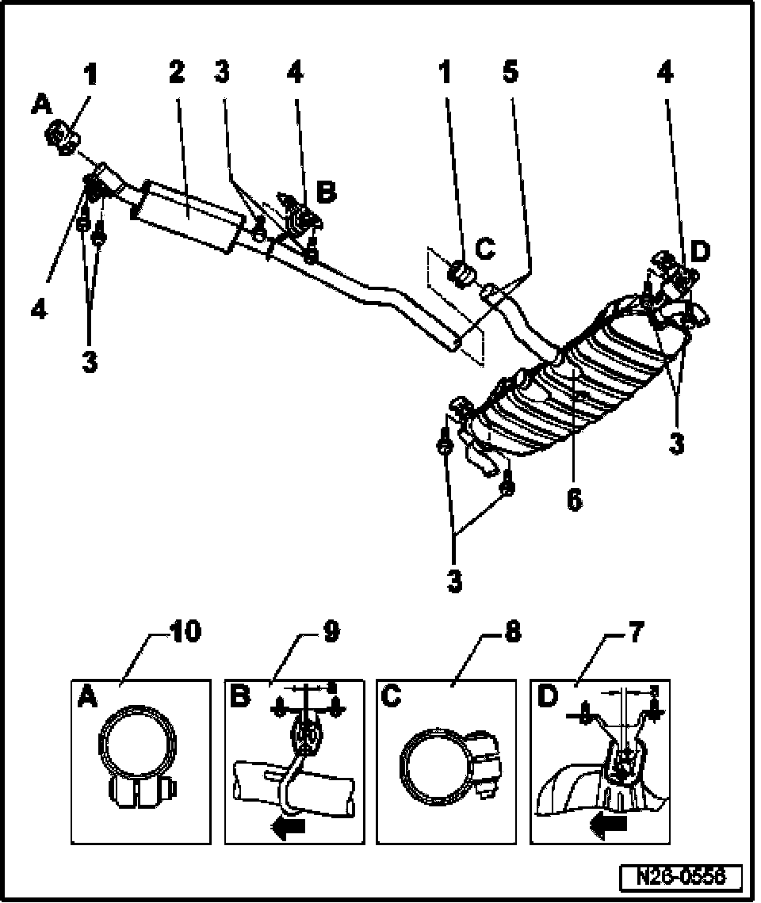
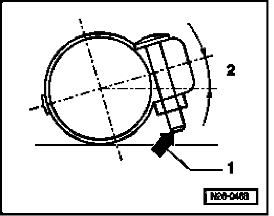
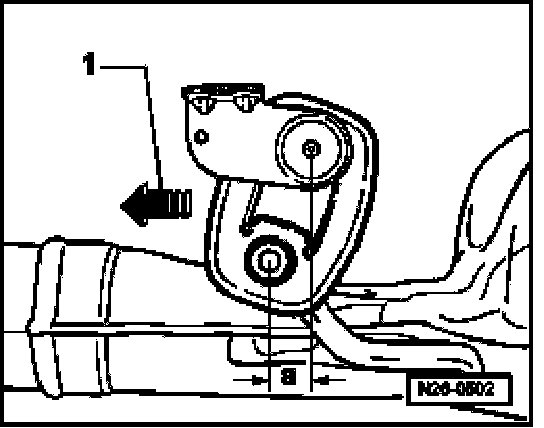

Mufflers With Mounts
Mufflers With Mounts

1 Double clamp, 40 Nm
- Installation position of double clamps, See Fig. 1
2 Center muffler
3 Securing bolt, 25 Nm
4 Support ring
- Note installed position, See Fig. 2
5 Separating point
- For repairs
- Marked by a depression in the exhaust pipe
- At factory, center and rear mufflers are installed as a single component. Replacement center and rear mufflers are supplied separately, with replacement double clamp for connecting joint. (Installation position of double clamps, See Fig. 1 )
- Cut connecting pipe at separating point at right angle using body repair saw (e.g. VAG1523)
- Notches left and right of separating point must still be visible after installing double clamps.
6 Rear muffler
- Installing muffler free of tension
7 Support ring
- Note installed position, See Fig. 2
- Replace if damaged
8 Double clamp (for repair)
- Installation position, See Fig. 1
- Must be pushed onto center of exhaust pipe at front
9 Support ring
- Note installed position, See Fig. 2
- Replace if damaged
10 Double clamp
- Must be pushed onto center of exhaust pipe at front
Fig. 1 Installation position of double clamps in direction of travel

1 Screw tips must not project beyond lower edge of double clamp.
2 Angle 10 degree to 15 degree
Fig. 2 Installation position of suspensions

Requirement
- Exhaust system, cold
Procedure
- Press exhaust system in direction of travel (arrow -1-) and tighten double clamps tightly until dimension -a- at suspensions is reached.
Muffler Dimension -a-
Center muffler 10 mm
Rear muffler 15 mm.